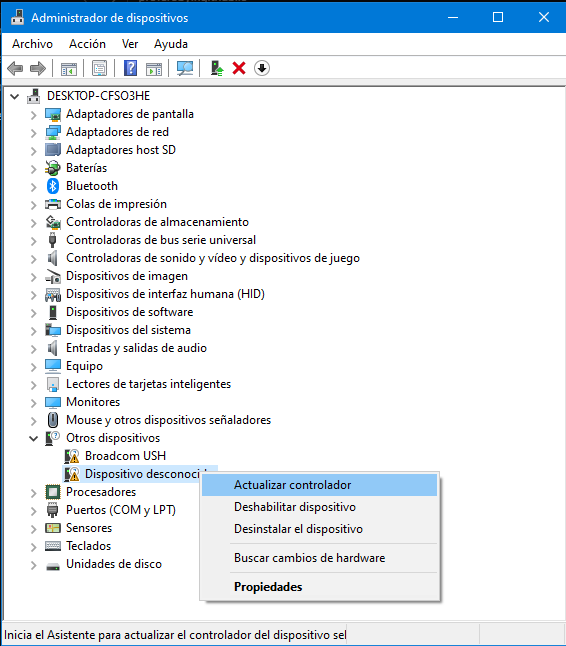
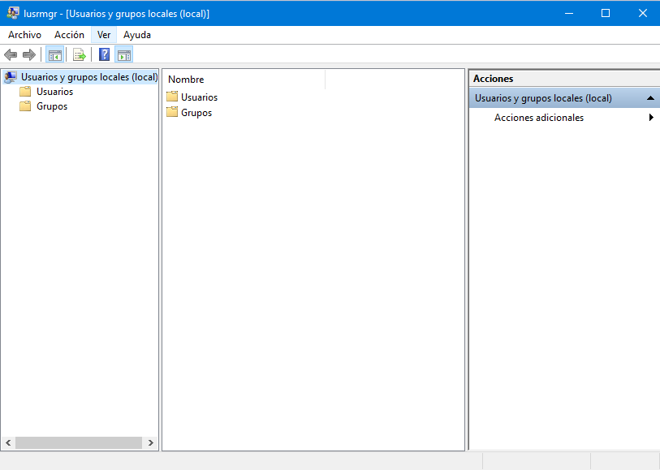
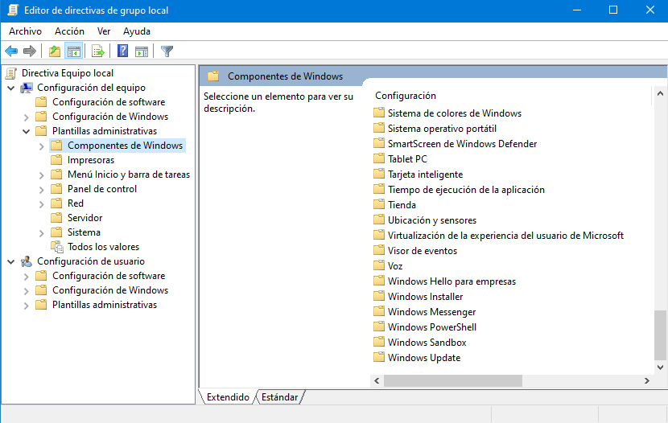
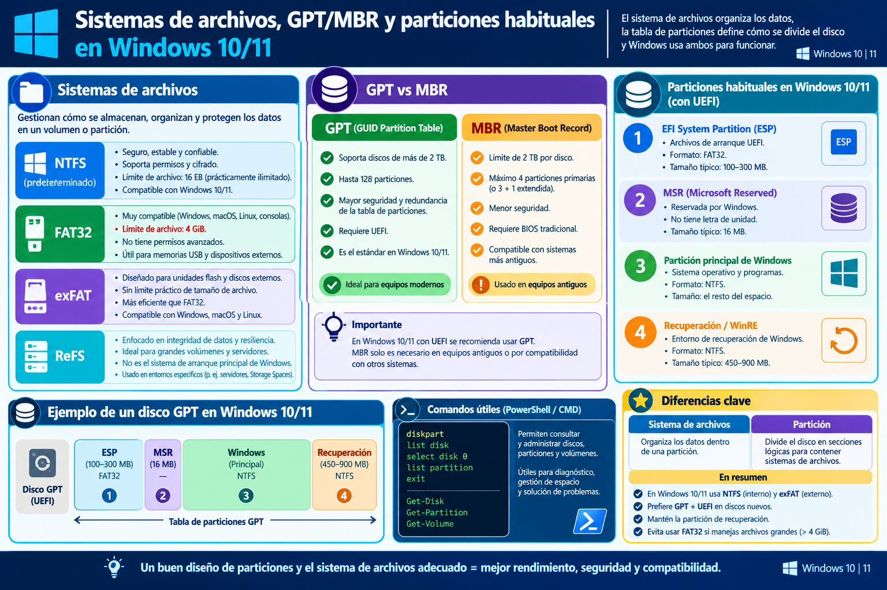
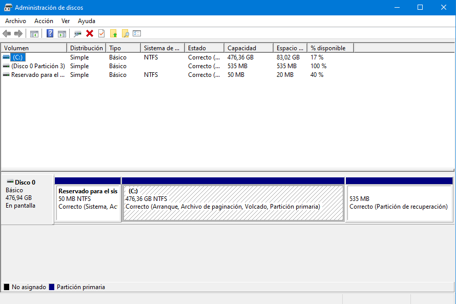
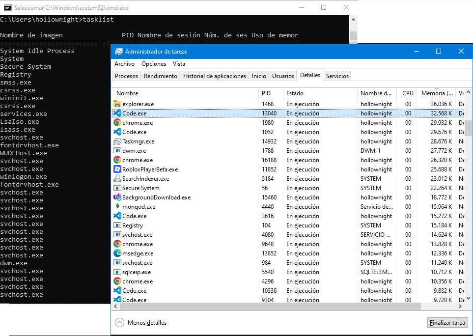
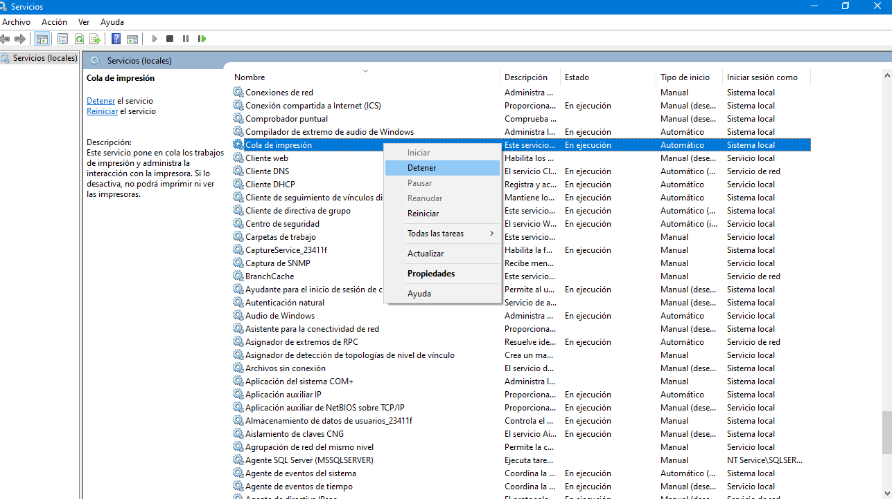

1. Arquitectura Base del Núcleo Windows NT
Windows 10 y 11 están construidos sobre la arquitectura de núcleo Windows NT. Operan bajo un modelo híbrido que divide la ejecución en dos modos de privilegio principales:
1.1 Modo Usuario (User Mode) y Modo Núcleo (Kernel Mode)
- Modo Usuario: Espacio de memoria restringido donde se ejecutan las aplicaciones finales y la interfaz gráfica. No tienen acceso directo al hardware.
-
Modo Núcleo:
Espacio con privilegios totales donde opera el Kernel
(
ntoskrnl.exe), los controladores de dispositivos (drivers) y la abstracción de hardware (HAL).

Figura 1.1: Diagrama de separación de privilegios entre Modo Usuario y Modo Núcleo (Haz clic para ampliar)
Reto de laboratorio
Investiga con tasklist /v qué proceso de usuario corre bajo el session ID 0 (si
aplica) o identifica qué proceso de sesión interactiva pertenece a tu cuenta actual.
2. Administrador de Dispositivos en Windows 10 y 11
En el tema anterior vimos que el Modo Núcleo
aloja los drivers y la HAL.
El Administrador de dispositivos
(devmgmt.msc) es precisamente la consola que
permite ver, en tiempo real, cómo Windows ha detectado y
cargado esos controladores sobre el hardware físico.
2.1 ¿Para qué sirve?
- Inventario de hardware: muestra todos los dispositivos detectados por el sistema, agrupados por categorías (procesadores, discos, adaptadores de red, etc.).
- Estado del controlador: indica si el dispositivo funciona correctamente o si presenta errores mediante iconos de advertencia.
- Actualización de drivers: permite buscar controladores actualizados de forma automática o manual.
- Habilitar / deshabilitar: útil para aislar fallos o probar hardware conflictivo.
- Propiedades avanzadas: ofrece pestañas para recursos, energía, detalles y eventos asociados al dispositivo.
2.2 Abrir el Administrador de dispositivos
:: Desde CMD o Ejecutar (Win + R)
C:\> devmgmt.msc
:: Desde PowerShell
PS C:\> devmgmt.msc2.3 Categorías más habituales
- Procesadores: núcleos lógicos detectados por Windows.
- Discos duros / Unidades de disco: discos internos, SSD y unidades extraíbles.
- Adaptadores de pantalla: GPU y controladores de vídeo.
- Adaptadores de red: tarjetas Ethernet, Wi-Fi y Bluetooth.
- Controladoras IDE ATA/ATAPI: canales de almacenamiento (SATA, NVMe).
- Dispositivos de sistema: componentes internos como ACPI, timers y buses.
- Dispositivos con errores: aparecen con un signo de admiración amarillo; se recomienda revisar su código de error.

Figura 2.1: Administrador de dispositivos
(devmgmt.msc) en Windows 10 y 11
(Haz clic para ampliar)
2.4 Consultar el estado de un dispositivo
Al hacer doble clic sobre un dispositivo se abre su ventana de Propiedades, con pestañas como General, Controlador, Detalles y Recursos. En la pestaña General se puede leer el estado del dispositivo y, si hay error, su código.
También es posible consultar el estado desde consola
mediante pnputil:
:: Listar dispositivos con problemas desde CMD
C:\> pnputil /enum-devices /problem
:: Consultar controladores de terceros instalados
C:\> pnputil /enum-drivers
:: Ver información resumida de un dispositivo por clase
C:\> pnputil /enum-devices /class Display2.5 Herramienta relacionada: Administración de discos
Es común que se confundan ambas consolas. El
Administrador de dispositivos gestiona el
hardware y sus controladores, mientras que
Administración de discos
(diskmgmt.msc) gestiona las particiones y
volúmenes del disco (tema que se verá más adelante en la
sección 7).
Nota: modificar un controlador en el Administrador de dispositivos puede dejar el equipo sin vídeo o sin red. Antes de actualizar o desinstalar un driver conviene crear un punto de restauración.
Reto de laboratorio
Abre devmgmt.msc, localiza el dispositivo de sonido o el adaptador de red, entra
en sus Propiedades > Controlador y anota la versión y fecha del driver.
Luego compárala con la que reporta dxdiag en la pestaña Sonido o
Pantalla para verificar coherencia entre ambas herramientas.
3. Gestión de Usuarios, Cuentas y Privilegios en Windows 10 y 11
La administración de usuarios permite controlar quién puede iniciar sesión, qué recursos puede utilizar y qué nivel de privilegio posee dentro del equipo. En Windows 10 y 11 conviene conocer tanto las herramientas gráficas como los comandos de administración.
3.1 Tipos de cuentas
- Cuenta de administrador: puede realizar cambios que afectan a todo el equipo, instalar software, administrar usuarios y modificar configuraciones protegidas.
- Cuenta estándar: está orientada al uso cotidiano y tiene restricciones para realizar cambios que afecten al sistema.
- Cuenta Microsoft: permite iniciar sesión utilizando una identidad Microsoft y puede integrarse con servicios en línea.
- Cuenta local: existe directamente en el equipo y no requiere una identidad Microsoft para iniciar sesión.
3.2 Herramientas para administrar usuarios
- Configuración > Cuentas: administración gráfica de usuarios, opciones de inicio de sesión y otros ajustes relacionados con las cuentas.
- Panel de control: ofrece herramientas clásicas de administración de cuentas.
-
Usuarios y grupos locales:
lusrmgr.msc, disponible principalmente en ediciones Pro, Enterprise, Education y equivalentes; permite administrar usuarios y grupos locales. -
CMD:
net userynet localgrouppermiten consultar y administrar cuentas y grupos desde la consola.
3.3 Comandos básicos de práctica
:: Listar usuarios locales
C:\> net user
:: Consultar un usuario
C:\> net user NombreUsuario
:: Crear un usuario local (requiere privilegios administrativos)
C:\> net user Soporte /add
:: Agregar un usuario al grupo de administradores
C:\> net localgroup Administradores Soporte /add
:: Listar grupos locales
C:\> net localgroupBuenas prácticas: utilizar cuentas estándar para las tareas cotidianas y conceder privilegios administrativos solamente cuando sean necesarios.
Reto de laboratorio
Crea un usuario local llamado auditor, añádelo únicamente al grupo estándar de
usuarios, y verifica su pertenencia con net localgroup Usuarios.
4. UAC y Control de Cuentas de Usuario
UAC (User Account Control) es el mecanismo de seguridad de Windows que solicita confirmación o credenciales cuando una acción requiere elevación de privilegios. Su objetivo es evitar que cambios administrativos se ejecuten silenciosamente.
4.1 ¿Qué es userpasswords2?
El comando control userpasswords2 abre el
cuadro clásico de Cuentas de usuario.
Es una herramienta útil para gestionar determinados
aspectos de las cuentas y del inicio de sesión automático.
No debe confundirse con UAC: son funciones diferentes.
:: Abrir Cuentas de usuario avanzadas
C:\> control userpasswords24.2 ¿Qué es lusrmgr.msc?
Usuarios y grupos locales es una consola
administrativa de Windows que permite gestionar las
cuentas locales y los grupos existentes en el equipo.
Se abre mediante el comando lusrmgr.msc.
Esta herramienta permite, entre otras tareas, consultar las cuentas locales, crear o eliminar usuarios, modificar determinadas propiedades de una cuenta, establecer opciones relacionadas con la contraseña y administrar la pertenencia de los usuarios a grupos locales.
En un equipo independiente, esta consola resulta especialmente útil para comprender la relación entre usuarios, grupos y privilegios. Por ejemplo, un usuario puede pertenecer al grupo local Administradores, Usuarios u otros grupos disponibles en el sistema.
Importante:
lusrmgr.msc está disponible principalmente en
ediciones como Windows Pro, Enterprise y
Education. En Windows Home la consola no está
disponible de forma predeterminada.

Figura 4.1: Consola Usuarios y grupos locales
(lusrmgr.msc) para administrar cuentas y
grupos locales en Windows 10 y 11
(Haz clic para ampliar)
4.3 Abrir Usuarios y grupos locales
:: Abrir Usuarios y grupos locales
C:\> lusrmgr.mscElementos principales de la consola
- Usuarios: muestra las cuentas locales existentes en el equipo.
- Grupos: permite consultar y administrar los grupos locales y sus miembros.
- Propiedades del usuario: permite revisar determinadas características de una cuenta y sus opciones de configuración.
- Pertenencia a grupos: permite comprobar qué grupos locales tienen asignados determinados usuarios.
4.4 Relación entre lusrmgr.msc y UAC
Es importante distinguir ambas funciones.
UAC controla la elevación de privilegios,
mientras que
lusrmgr.msc administra usuarios y
grupos locales.
Sin embargo, ambas herramientas están relacionadas durante
una tarea administrativa.
Usuario
│
▼
Ejecuta lusrmgr.msc
│
▼
¿La operación requiere privilegios?
│
├── No ──► Se continúa con la operación permitida
│
└── Sí
│
▼
UAC
│
▼
Confirmación / credenciales
│
▼
Elevación de privilegios
│
▼
Administración de usuarios o grupos
De esta manera, lusrmgr.msc representa la
herramienta de administración, mientras que UAC representa
una capa de seguridad que controla la ejecución de
determinadas acciones administrativas.
4.5 Funcionamiento práctico del UAC
- Una aplicación que necesita privilegios administrativos puede solicitar elevación.
- Un usuario administrador normalmente confirma la operación mediante un aviso de UAC.
- Una cuenta estándar puede necesitar proporcionar credenciales de administrador.
- Desactivar o reducir excesivamente UAC disminuye una capa importante de protección.
4.6 Acceso a la configuración de UAC
:: Abrir la configuración clásica de UAC
C:\> UserAccountControlSettings.exe4.7 Relación con otros métodos de administración
Windows proporciona diferentes mecanismos para trabajar con las cuentas locales. La elección depende del nivel de administración y de la edición del sistema.
Gestión de usuarios
│
┌────────────────┼─────────────────┐
│ │ │
▼ ▼ ▼
Configuración lusrmgr.msc CMD
Cuentas Usuarios/Grupos net user
net localgroup
│ │ │
└────────────────┼─────────────────┘
▼
Privilegios / UAC
│
▼
Elevación controladaObjetivo de aprendizaje: comprender la diferencia entre una cuenta local, un grupo local, los privilegios administrativos y el mecanismo UAC que controla la elevación de determinadas operaciones.
Reto de laboratorio
Abre UserAccountControlSettings.exe, cambia el nivel a notificación estricta y
prueba ejecutar un instalador o consola elevada para ver el comportamiento del UAC.
5. Directivas de Grupo con gpedit.msc
El Editor de directivas de grupo local permite configurar numerosas políticas del sistema y del usuario. Es especialmente útil para aprender cómo Windows centraliza reglas de configuración y seguridad.
5.1 Abrir el Editor de directivas de grupo
:: Abrir el Editor de directivas de grupo local
C:\> gpedit.msc
Figura 5.1: Ventana principal del Editor de directivas de grupo local
gpedit.msc
(Haz clic para ampliar)
5.2 Estructura básica
- Configuración del equipo: políticas aplicadas al equipo, independientemente del usuario que inicie sesión.
- Configuración de usuario: políticas relacionadas con el usuario y su entorno.
- Dentro de ambas ramas se encuentran Configuración de software, Configuración de Windows y Plantillas administrativas, según la directiva disponible.
5.3 Relación entre Registro y Directivas de Grupo
Muchas directivas terminan produciendo configuraciones que
Windows almacena o utiliza mediante el Registro. Por eso
resulta didácticamente conveniente estudiar primero la
arquitectura y las cuentas, después UAC y
gpedit.msc, y posteriormente profundizar en
regedit.exe.
Importante:
gpedit.msc no está disponible de forma
predeterminada en algunas ediciones, como Windows Home.
Las políticas disponibles también pueden variar según la
edición y versión de Windows.
Reto de laboratorio
Localiza en gpedit.msc una política restrictiva (por ejemplo, ocultar unidades
específicas de Mi PC) y comprueba qué clave de registro se modifica en
HKCU\Software\Microsoft\Windows\CurrentVersion\Policies\Explorer.
6. El Registro de Windows y Editor Regedit
El Registro de Windows es una base de datos jerárquica centralizada donde el sistema operativo guarda la configuración del hardware, controladores, programas instalados y preferencias de usuario.
6.1 ¿Qué es Regedit?
Regedit
(regedit.exe) es la herramienta oficial de
interfaz gráfica de Windows diseñada para inspeccionar,
modificar, exportar y restaurar las claves y valores
almacenados en la base de datos del Registro.
6.2 Estructura de Claves Raíz (HKEYs)
-
HKEY_CLASSES_ROOT (HKCR):Guarda asociaciones de archivos y registros COM/ActiveX. -
HKEY_CURRENT_USER (HKCU):Almacena la configuración y preferencias del usuario con la sesión activa. -
HKEY_LOCAL_MACHINE (HKLM):Contiene los ajustes globales del equipo aplicables a todos los usuarios. -
HKEY_USERS (HKU):Aloja los perfiles de todos los usuarios registrados en el sistema. -
HKEY_CURRENT_CONFIG (HKCC):Información temporal sobre el perfil de hardware activo detectado en el arranque.
6.3 Tipos de valores fundamentales y Precauciones
REG_SZ: Cadena de texto estándar.REG_DWORD: Valor entero de 32 bits (binario/decimal para flags o configuraciones numéricas).- Precauciones: Una modificación errónea en
HKLM\SYSTEMpuede invalidar el arranque del kernel; exporta siempre la rama antes de editar.
:: Consultar o crear valor de registro desde CLI (ejemplo básico)
C:\> reg query "HKCU\Console"
Figura 6.1: Estructura de colmenas del Registro en regedit.exe (Haz clic para ampliar)
Reto de laboratorio
Exporta la subclave HKCU\Environment a un archivo backup_env.reg y
añade un valor de prueba tipo REG_SZ llamado LabTest.
7. Sistemas de Archivos y Particiones en Windows 10 y 11
En Windows conviene distinguir dos conceptos: el sistema de archivos organiza los datos dentro de un volumen, mientras que el esquema o estilo de particionado define cómo se distribuyen las particiones en el disco.
7.1 Sistemas de archivos
- NTFS: Es el sistema de archivos principal de Windows 10 y 11 para el volumen donde se instala el sistema. Soporta permisos mediante ACL, journaling, compresión, cuotas y cifrado EFS.
- exFAT: Adecuado para memorias USB, tarjetas SD y discos externos cuando se necesita compatibilidad entre Windows y otros sistemas.
- FAT32: Muy compatible con distintos equipos y dispositivos, pero tiene una limitación importante: no permite archivos individuales de más de 4 GiB. Windows suele utilizar FAT32 en la partición de sistema EFI (ESP) en equipos UEFI.
- ReFS: Diseñado para escenarios que requieren alta resiliencia y grandes volúmenes de datos. Su disponibilidad depende de la edición y versión de Windows.
7.2 Diferencia práctica: Permisos Compartidos (Red) vs. Permisos NTFS (Local)
Los permisos NTFS evalúan el acceso local y de red combinados aplicando la regla de la
restricción más restrictiva si se cruzan, mientras que los permisos compartidos (SMB)
aplican al recurso en red. Buenas prácticas: dejar Compartir con acceso Total a Todos o
Authenticated Users y acotar la seguridad real usando listas de control de acceso NTFS.
Comando de gestión de ACLs locales: icacls C:\Logs /grant auditor:(R)

Figura 7.1: Propiedades de volúmenes de disco y asignación de NTFS (Haz clic para ampliar)
7.3 Estilos de particionado: GPT y MBR
- GPT (GUID Partition Table): Es el esquema recomendado para instalaciones modernas de Windows 10 y 11 con firmware UEFI.
- MBR (Master Boot Record): Es un esquema heredado, asociado normalmente con firmware BIOS/Legacy.
7.4 Particiones habituales de una instalación UEFI
- EFI System Partition (ESP): normalmente FAT32; contiene archivos necesarios para el arranque mediante UEFI.
- Microsoft Reserved (MSR): pequeña partición reservada por Windows en discos GPT.
-
Partición principal de Windows:
normalmente NTFS; contiene
Windows,Program Files, perfiles de usuario y datos. - Partición de recuperación: contiene herramientas del entorno de recuperación de Windows (WinRE).
7.5 Ejemplo conceptual del disco
Disco GPT (UEFI)
┌────────────┬──────┬──────────────────────────┬──────────────┐
│ EFI/FAT32 │ MSR │ Windows / NTFS │ Recuperación │
│ arranque │ │ C:\ │ / WinRE │
└────────────┴──────┴──────────────────────────┴──────────────┘
Sistema de archivos ≠ partición:
NTFS / FAT32 / exFAT / ReFS → organizan datos dentro de un volumen
GPT / MBR → describen cómo se particiona el disco7.6 Herramientas de Windows para consultar discos
-
Administración de discos:
diskmgmt.mscpermite visualizar discos, volúmenes, particiones, letras de unidad y sistemas de archivos. - DiskPart: herramienta de consola para consultar y administrar discos y particiones.
-
PowerShell:
Get-Disk,Get-PartitionyGet-Volumepermiten consultar la estructura de almacenamiento.
:: Consultar discos y particiones
C:\> diskpart
DISKPART> list disk
DISKPART> list partition
:: PowerShell
PS C:\> Get-Disk
PS C:\> Get-Partition
PS C:\> Get-Volume
Figura 7.2: Sistemas de archivos, GPT/MBR y particiones
habituales en Windows 10/11 luego de ejecutar
diskmgmt.msc
(Haz clic para ampliar)
Reto de laboratorio
Crea la carpeta C:\Logs, asigna permisos de lectura al usuario auditor
usando icacls C:\Logs /grant auditor:(R) y prueba escribir un archivo dentro para
verificar denegación o UAC según corresponda.
8. Estructura de Directorios de Windows 10 y 11
Después de estudiar los sistemas de archivos y las
particiones, el siguiente paso es comprender cómo Windows
organiza la información dentro del volumen del sistema,
normalmente identificado como C:\.
8.1 Árbol principal de directorios
C:\
│
├── Boot\
│ └── Archivos relacionados con el proceso de arranque
│
├── EFI\
│ └── Archivos de arranque UEFI
│
├── PerfLogs\
│ └── Registros de rendimiento
│
├── Program Files\
│ └── Programas instalados de 64 bits
│
├── Program Files (x86)\
│ └── Programas de 32 bits
│
├── ProgramData\
│ └── Datos compartidos de aplicaciones
│
├── Users\
│ ├── Public\
│ │ └── Archivos compartidos
│ │
│ └── NombreUsuario\
│ ├── Desktop\
│ ├── Documents\
│ ├── Downloads\
│ ├── Pictures\
│ ├── Music\
│ ├── Videos\
│ └── AppData\
│ ├── Local\
│ ├── LocalLow\
│ └── Roaming\
│
├── Windows\
│ ├── System32\
│ ├── SysWOW64\
│ ├── Temp\
│ ├── Logs\
│ ├── INF\
│ ├── Fonts\
│ ├── SoftwareDistribution\
│ └── WinSxS\
│
└── Recovery\
└── Componentes relacionados con recuperación8.2 Directorios fundamentales
-
C:\Windows\: contiene los componentes principales del sistema operativo. -
C:\Windows\System32\: contiene numerosos componentes, bibliotecas, ejecutables y herramientas del sistema. -
C:\Users\: contiene los perfiles de los usuarios. -
C:\Users\NombreUsuario\AppData\: almacena datos y configuraciones de aplicaciones. -
C:\Program Files\: ubicación habitual de aplicaciones de 64 bits. -
C:\Program Files (x86)\: ubicación habitual de aplicaciones de 32 bits. -
C:\ProgramData\: almacena datos de aplicaciones compartidos. -
C:\Windows\Temp\: contiene archivos temporales. -
C:\Windows\Logs\: contiene registros generados por componentes de Windows.
8.3 El perfil de usuario
C:\Users\NombreUsuario\
│
├── Desktop\
├── Documents\
├── Downloads\
├── Pictures\
├── Music\
├── Videos\
└── AppData\
├── Local\
├── LocalLow\
└── Roaming\Esta estructura permite relacionar directamente el tema de gestión de usuarios con el almacenamiento de sus datos.
8.4 Relación con las variables de entorno
Las variables de entorno permiten acceder a determinadas rutas sin escribirlas manualmente.
:: CMD
C:\> echo %SystemRoot%
C:\Windows
C:\> echo %USERPROFILE%
C:\Users\NombreUsuario
:: PowerShell
PS C:\> $env:SystemRoot
C:\Windows
PS C:\> $env:USERPROFILE
C:\Users\NombreUsuario8.5 Explorar el árbol desde la consola
:: Mostrar las carpetas principales de C:
C:\> tree C:\ /A
:: Mostrar el árbol de Windows
C:\> tree C:\Windows /A
:: Mostrar archivos y carpetas
C:\> tree C:\Windows /A /F
También se puede utilizar dir para obtener un
listado convencional:
C:\> dir C:\
C:\> dir C:\Windows
C:\> dir C:\Users8.6 Equivalente en PowerShell
PS C:\> Get-ChildItem C:\
PS C:\> Get-ChildItem C:\Windows
PS C:\> Get-ChildItem C:\Users8.7 Relación entre el árbol y las herramientas estudiadas
C:\
│
┌─────────┼──────────┐
│ │ │
Windows Users Program Files
│ │ │
System32 Perfil Aplicaciones
│ │
Herramientas AppData
del sistema │
└── Datos de aplicaciones
Registro ───────► Configuración del sistema y usuarios
UAC ────────────► Control de elevación de privilegios
lusrmgr.msc ────► Usuarios y grupos locales
gpedit.msc ─────► Políticas del sistema y usuarios
Variables ──────► Acceso dinámico a rutas
Procesos ───────► Ejecutables y servicios en ejecución
dxdiag ─────────► Diagnóstico del hardware y DirectX
Nota de seguridad:
la estructura puede variar según la edición, configuración,
arquitectura y características instaladas. No se deben
eliminar ni modificar manualmente archivos críticos de
C:\Windows\ sin conocer previamente su
función y contar con un procedimiento de recuperación.
Reto de laboratorio
Usa tree %userprofile% /A desde CMD para auditar el contenido de tu perfil de
usuario sin interactuar con la interfaz gráfica.
9. Variables de Entorno en Windows
Una variable de entorno es un valor dinámico guardado en el sistema operativo que contiene información sobre el entorno de ejecución. Su principal ventaja es la portabilidad entre distintos equipos.
9.1 Sintaxis según la Consola
-
CMD:
se delimitan entre signos de porcentaje
(ej.
%variable%). -
PowerShell:
se acceden usando
$env:variable.
9.2 Principales Variables Nativas
-
%systemroot%/$env:SystemRoot: directorio de instalación de Windows. -
%programfiles%/$env:ProgramFiles: carpeta de aplicaciones. -
%userprofile%/$env:USERPROFILE: ruta personal del usuario activo. -
%temp%/$env:TEMP: ubicación de archivos temporales. -
%PATH%/$env:PATH: rutas utilizadas para la búsqueda de binarios y resolución de comandos en la CLI sin ruta absoluta.
:: Listar todas las variables de entorno
C:\> set
:: Consultar el valor de una variable en CMD
C:\> echo %systemroot%
C:\Windows
:: Modificar temporalmente / añadir ruta al PATH en sesión CMD
C:\> set PATH=%PATH%;C:\MiHerramienta
:: Consultar el valor de una variable en PowerShell
PS C:\> $env:SystemRoot
C:\Windows
Figura 9.1: Panel de gestión gráfica de Variables de
Entorno al ejecutar el comando
rundll32 sysdm.cpl,EditEnvironmentVariables
(Haz clic para ampliar)
Reto de laboratorio
Agrega un directorio personalizado C:\ScriptsLab al PATH del sistema y
verifica con where mi_script si el ejecutable es localizado desde cualquier ruta de
CMD.
10. Administración de Procesos, Servicios y Tareas
10.1 Conceptos de Ejecución
-
Proceso:
instancia de un programa con espacio de memoria virtual privada. Un proceso interactivo
se enlaza a una sesión de escritorio visible para el usuario (Session ID > 0), mientras que un
servicio de Windows corre en background controlado por el SCM (Service Control Manager,
Session ID 0) sin interacción directa con GUI de sesión. Una tarea programada
(
taskschd.msc) es un job o disparador temporal/condicional administrado por el Task Scheduler. - Hilo (Thread): unidad básica de ejecución dentro de un proceso.
- Servicio: proceso background controlado por el SCM.
10.2 Controladores y Herramientas CLI / GUI
:: Listar procesos activos con PID
C:\> tasklist
:: Finalizar un proceso por nombre
C:\> taskkill /IM nombre_proceso.exe /F
:: Finalizar un proceso por PID
C:\> taskkill /PID 4096 /F
:: Administrar servicios con SC (Service Control)
C:\> sc query wuauserv
C:\> sc stop wuauserv
:: Abrir monitor de recursos avanzado
C:\> resmon
C:\> taskschd.msc
Figura 10.1: Administración de procesos interactiva tasklist y taskmgr por CLI (Haz clic para ampliar)
Reto de laboratorio
Identifica un servicio inactivo con sc query type= service, levántalo con
sc start <nombre> y crea una tarea programada simple con
schtasks que ejecute calc.exe o un comando de diagnóstico a una hora
específica.
10.3 Sincronización con Semáforos y Objetos de Núcleo (x64)
Hasta ahora hemos visto cómo administrar procesos y servicios. Pero, ¿qué pasa cuando varios hilos de un mismo programa necesitan acceder al mismo recurso al mismo tiempo? Para evitar conflictos, Windows utiliza objetos de sincronización como los semáforos.
10.3.1 Analogía: El Estacionamiento con Capacidad Limitada
Piensa en un estacionamiento subterráneo con 4 espacios disponibles. Los hilos son como vehículos que llegan a la pluma de acceso. El Object Manager del Kernel es el vigilante que controla la entrada.
- Si hay espacios libres, el vigilante levanta la pluma y el vehículo entra. Esto equivale a decrementar el contador del semáforo.
- Si el estacionamiento está lleno, los vehículos esperan en una fila sin consumir combustible (CPU). El sistema operativo los mantiene bloqueados hasta que se libere un espacio.
- Cuando un vehículo sale, libera su espacio. El vigilante entonces permite la entrada al siguiente vehículo en la fila. Esto equivale a incrementar el contador del semáforo.
Figura 10.3: Analogía del semáforo de núcleo Win64 (x64) gestionando concurrencia de hilos (Haz clic para ampliar)
11. Diagnóstico del Sistema con dxdiag
DxDiag (DirectX Diagnostic Tool) es una herramienta de Windows que recopila información útil sobre el sistema, DirectX, pantalla, sonido y dispositivos relacionados.
11.1 Abrir DxDiag
:: Ejecutar el diagnóstico de DirectX
C:\> dxdiag11.2 Información que se puede revisar
- Sistema: versión de Windows, fabricante, modelo, BIOS/UEFI, procesador, memoria y DirectX.
- Pantalla / Display: adaptador gráfico, memoria de vídeo, resolución y controladores.
- Sonido / Sound: dispositivos de audio y controladores.
- Entrada / Input: dispositivos de entrada detectados.
11.3 Guardar un informe
Desde la ventana de DxDiag se puede utilizar “Guardar toda la información…” para generar un archivo de texto que facilita compartir las características del equipo durante una asistencia técnica.
Secuencia de diagnóstico:
primero identificar el sistema y sus componentes con
dxdiag; después relacionar esa información
con procesos, servicios, controladores y herramientas
específicas de reparación.
Reto de laboratorio
Exporta el reporte de diagnóstico de dxdiag mediante CLI silenciosa o interfaz
gráfica y contrasta la versión de WDDM del controlador de video con la memoria dedicada
reportada.
12. Práctica de Diagnóstico: Restablecimiento de la Cola de Impresión
El servicio Print Spooler
(spoolsv.exe) almacena temporalmente los
trabajos de impresión en la memoria intermedia antes de
transmitirlos.
Paso 1: Detención del Servicio
Accede a la consola de servicios
(services.msc) y detén
Cola de impresión.
Paso 2: Depuración de Archivos Temporales
Elimina los archivos alojados en
C:\Windows\System32\spool\PRINTERS\.
Paso 3: Reinicio del Servicio
Vuelve a iniciar el servicio para restablecer el flujo de impresión.
Resolución automatizada desde CMD
(usando %systemroot%):
C:\> net stop spooler
C:\> del /Q /F /S "%systemroot%\System32\Spool\PRINTERS\*.*"
C:\> net start spooler
Equivalente en PowerShell
(usando $env:SystemRoot):
PS C:\> Stop-Service -Name "Spooler" -Force
PS C:\> Remove-Item -Path "$env:SystemRoot\System32\Spool\PRINTERS\*" -Force -Recurse
PS C:\> Start-Service -Name "Spooler"
Figura 12.1: Consola de servicios (services.msc) ajustando la Cola de Impresión (Haz clic para ampliar)
Reto de laboratorio
Simula un documento atascado enviando un archivo fantasma o generando un archivo temporal manual
en PRINTERS\, ejecuta el script de purga automatizada en CMD y verifica el estado
con sc query spooler.